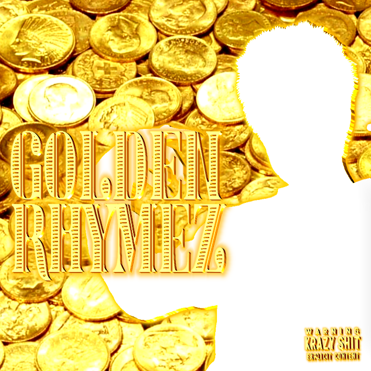

Krack Hed

| Artist | Krack Hed |
|---|---|
| Type | Ep |
| Released | May 5th 2026 |
| Label | Wack Muzik |
| Parent Label | Krazy Records |
| Genre | Hip-Hop / Rap |
| Formats | Digital / Compact Disc (CD) |
| # | Title |
|---|---|
| 1 | Golden Goals |
| 2 | Dollar Store Gangsta |
| 3 | White Boy CASH |
| 4 | Gold Limousine |
| 5 | Gold Coins |
| 6 | Hundred Dollar Bills |
Golden Rhymez is an Ep by Krack Hed released through Wack Muzik, a sub-label of Krazy Records. Golden Rhymez is a Low budget white trash rap over Stolen beats. Dirty slang, gutter humor, hood dreams, busted mic quality, and golden rhymez coming straight from the Krazy Krack Hed
Although released under Wack Muzik, the album is officially archived on the Krazy Records website as part of Krack Hed's complete discography.